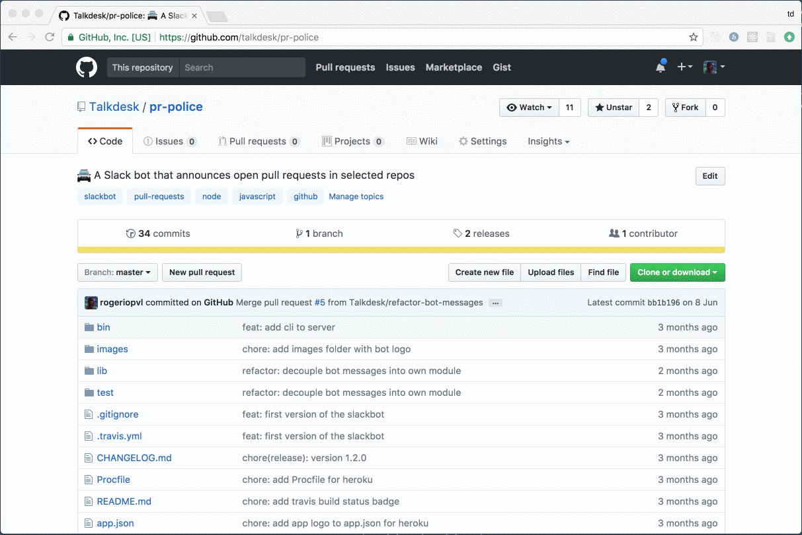

Pr. Police is deprecated and no longer supported.
Pr. Police is deprecated and no longer supported.
Features
- Monitor one or more repositories
- Post to one or more channels/private groups
- Configure everything or leave defaults
- Periodical reminders
- Open-source
- One click deploy to Heroku
How to get it?
The easy way
Just head to Talkdes/pr-police on Github and click the "deploy to Heroku" button on the bottom of the page. Fill in the environment variables and your ready to go.
Your way
npm install pr-police